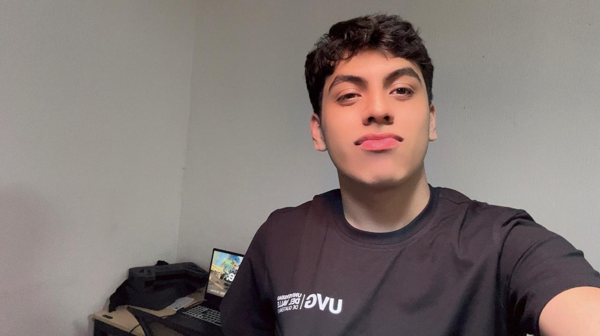

Expectativas 2026
Para este año educativo, mi principal objetivo es graduarme. Sé que no será fácil, pero también sé que lo lograré. Kinal es como escalones constantes y este es mi último escalón.

Soy Jeremy. Me considero una persona disciplinada y apasionada por el crecimiento constante en todos los aspectos de mi vida. Si me conoces bien, sabrás que estando conmigo siempre pasarás buenos momentos; me gusta hacer reír a los demás y que disfruten de mi compañía.
Sé que en la vida las cosas a veces se ponen difíciles, pero también sé que para todo hay una solución; una filosofía que aplico día a día en mi formación técnica y personal.
Para este año educativo, mi principal objetivo es graduarme. Sé que no será fácil, pero también sé que lo lograré. Kinal es como escalones constantes y este es mi último escalón.
Dedico de 4 a 6 horas diarias de estudio fuera del horario escolar. Entiendo que la carrera requiere compromiso constante para alcanzar la excelencia.